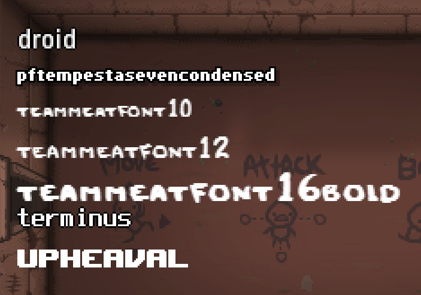

[Tutorial] Render text
Basics of rendering a text
First we need to have a look at the basic process of writing on the screen. here is a sample code:
local testmod= RegisterMod( "testmod" ,1 );
local function onRender(t)
Isaac.RenderText("Sample text", 50, 30, 1, 1, 1, 255)
end
testmod:AddCallback(ModCallbacks.MC_POST_RENDER, onRender)
The game uses the font-file "terminus.fnt" in order to render and display this text. this cant be changed. Luckily for us, this file contains "sprites" for all normal ASCII characters that exist out there (256 to be precise).
Rendering text with a different font
We can render any kind of text with a different font as well. This can be done by using the "Font()" class and its functions.local f = Font() -- init font object
f:Load("font/droid.fnt") -- load a font into the font object
f:DrawString("droid",60,50,KColor(1,1,1,1,0,0,0),0,true) -- render string with loaded font on position 60x50y
All possible Fonts that can be drawn:
Render Special Characters
The game allows us to write anything into the "displayed text" argument that is part of the ASCII standard for characters. For characters a-z, 0-9 and ,.#+;:_'*~° this works without any problems and without using any kind of "hack". Now if we just strait up try to type in ' ä ' or ' ß ' to let it render as text, it will not look as intended.
In order to fix this problem we have to use the "raw" version of said characters. Example:
\197 ÄIsaac.RenderText("S\228mple text", 50, 30, 1, 1, 1, 255)Sämple textList of all supported characters and their counterpart

The Developer _Kilburn mentioned that fonts could be created using this Tool: https://www.angelcode.com/products/bmfont